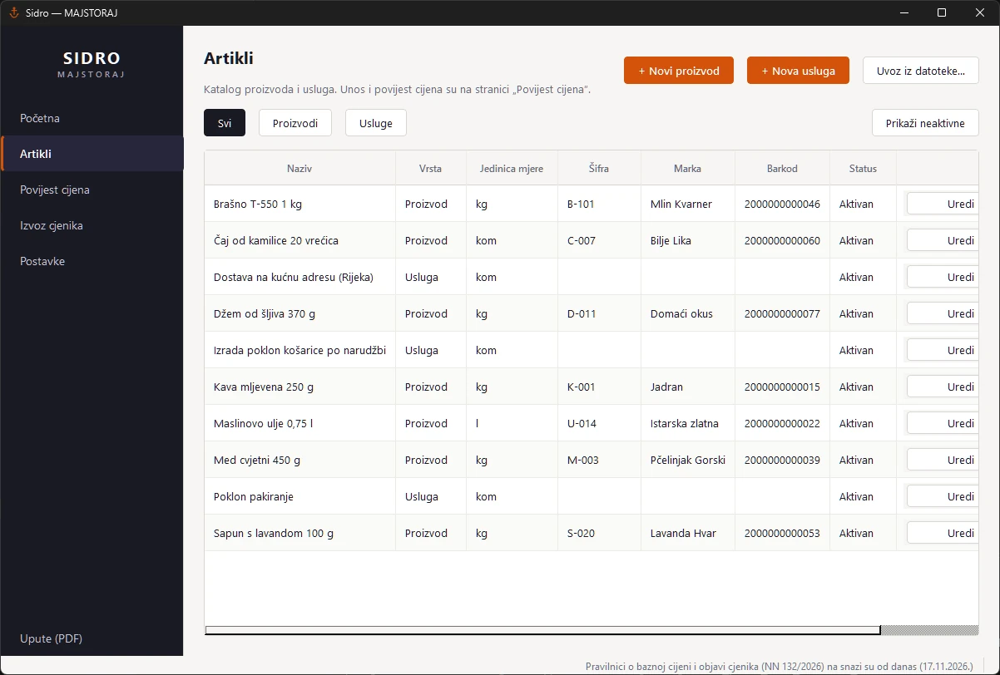
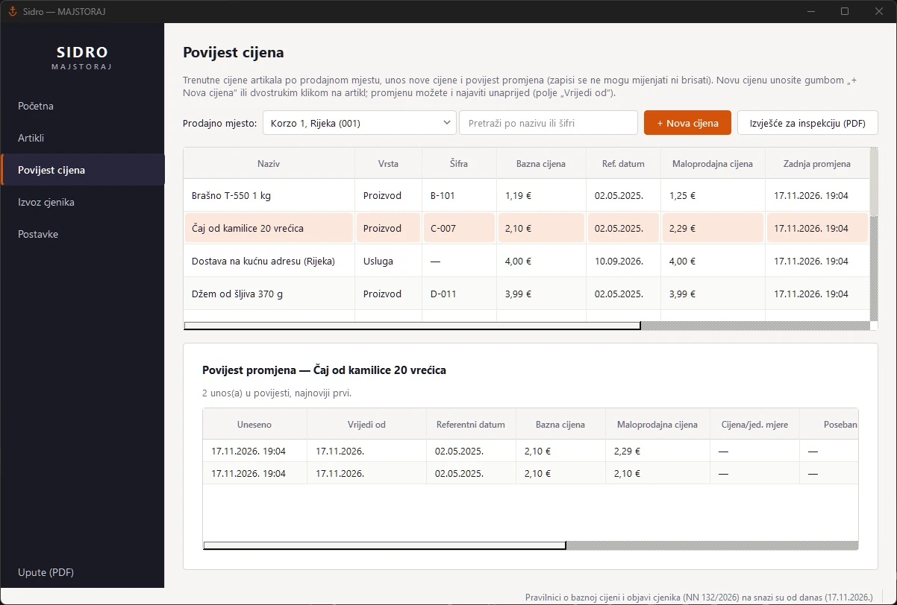
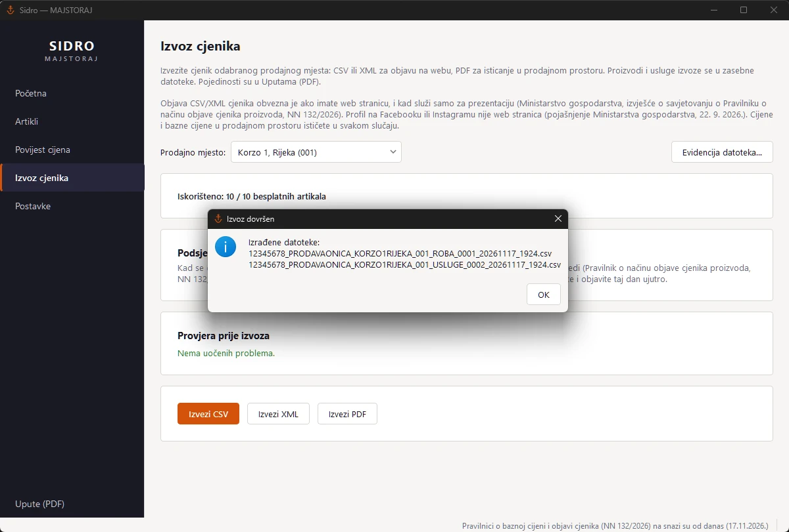
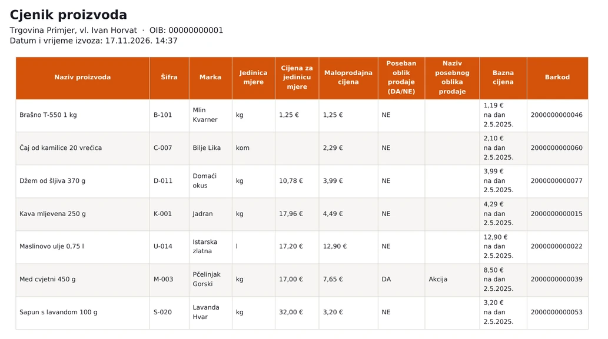

Excel bez traga
Nova cijena prepiše staru. Nakon mjesec dana nitko, uključujući vas, ne zna što je vrijedilo kad.
Povijest cijena, automatski
Što traže pravilnici, koji posao Sidro preuzima i kako izgleda aplikacija.
Od 17. studenoga 2026. uz cijenu se ističe bazna (sidrena) cijena, a tko ima web stranicu objavljuje cjenik u strojno čitljivom obliku. Vlada je 14. 11. 2026. donijela odluke o prestanku važenja privremenih Odluka (NN 101/2026), a od 17. 11. te obveze propisuju Pravilnik o isticanju bazne cijene proizvoda i Pravilnik o načinu objave cjenika proizvoda, doneseni po Zakonu o zaštiti potrošača. Pravilnici su objavljeni u Narodnim novinama 16. 11. 2026. (NN 132/2026) i propisuju točan oblik datoteke: redoslijed stupaca, razdjelnik „;” i naziv datoteke s OIB-om ili matičnim brojem (pregled).
Sidro 0.3 izvozi cjenik u obliku iz pravilnika: stupci propisanim redom, UTF-8 i „;”, naziv s OIB-om ili matičnim brojem i oznakom robe ili usluga, i jedna datoteka za sva prodajna mjesta kad je cjenik isti. Prilagodba prvim pravilnicima po Zakonu o zaštiti potrošača (bazna cijena i objava cjenika) uključena je u licencu: postojeći korisnici nadogradnju dobivaju besplatno.
Uz važeću cijenu ističe se cijena na referentni dan: u pravilu 10. 9. 2026., za propisane skupine proizvoda (npr. hrana, piće, kozmetika, sredstva za čišćenje) 2. 5. 2025., a za artikle uvedene kasnije — dan stavljanja u ponudu. Kod robe stoji na istoj oznaci kao maloprodajna cijena, kod usluga na cjeniku usluga.
Cjenik se objavljuje na webu u propisanom obliku (CSV ili XML, UTF-8, stupci propisanim redom, odvojeni točkom-zarezom) i s propisanim nazivom datoteke, zasebno za robu i usluge. Izmjena se objavljuje do 11:00 na dan izmjene, a stari cjenik ostaje dostupan 15 dana. Kako izgleda datoteka i na što paziti
Sidro je alat za pripremu cjenika. Jesu li unesene cijene točne i odnosi li se obveza na vaše poslovanje provjerite u samim propisima, pojašnjenjima Ministarstva gospodarstva ili kod svoje komore (HOK, HGK).
Nije problem promijeniti cijenu. Problem je znati i pokazati što je vrijedilo kad, i objaviti to u točno propisanom obliku.
Nova cijena prepiše staru. Nakon mjesec dana nitko, uključujući vas, ne zna što je vrijedilo kad.
Povijest cijena, automatski
Redoslijed stupaca, točka-zarez, UTF-8, OIB ili matični broj i vremenska oznaka u nazivu — sitnice koje je lako promašiti ručno.
Isti, ispravan oblik svaki put
Mjesečna ili godišnja pretplata za posao od pola sata tjedno — trošak koji se stalno vraća.
Platite jednom, koristite trajno
ERP i knjigovodstveni moduli traže uvođenje i predznanje koje nemate kad vam treba samo cjenik.
Instalacija i prvi cjenik isti dan
Uz aplikaciju dolaze kratke upute u PDF-u. Ako znate koristiti Excel, snaći ćete se i u Sidru.
Obrazac se prilagođava vrsti obveznika: trgovcu za robu, pružatelju usluga za usluge. Unosite jednom, poslije samo mijenjate cijene.
Svaka promjena cijene trajno se bilježi. Stari zapisi se ne prepisuju i ne brišu.
Jednim klikom: datoteke za web u propisanom obliku i cjenik za prodajno mjesto u PDF-u.
Pošaljite datoteke svom web-majstoru ili ih Sidro sam šalje na vaš poslužitelj (SFTP, FTPS, WebDAV, HTTP).
Snimke stvarne aplikacije s izmišljenim podacima jedne male trgovine.

Povećaj
Povećaj
Povećaj
PovećajSvaka značajka postoji jer je traže propisi ili jer štiti vaše podatke.
Svaka promjena se samo dodaje; stari zapisi ostaju kakvi su bili, pa uvijek znate što je vrijedilo kad.
Propisan naziv datoteke (OIB ili matični broj, prodajno mjesto s adresom i oznakom, roba ili usluge, broj pohrane, vrijeme objave), zasebne datoteke za robu i usluge. Primjeri datoteka
Kopija baze pri svakom pokretanju i izvoz cijele baze jednim klikom, za prijenos na novo računalo bez gubitka povijesti.
SFTP, FTPS, WebDAV ili HTTP API. Datoteke idu izravno s vašeg računala na vaš poslužitelj.
Ne uz računalo: licenca prelazi na novo računalo zajedno s bazom, a po potrebi je aktivirate istim OIB-om, bez ponovne kupnje.
Cjenik, povijest cijena i arhiva objava nalaze se samo na vašem računalu — mi im nemamo pristup. Sidro radi bez korisničkog računa, a za svakodnevni rad ne treba internet. Cjenik pripremate bez dijeljenja: dok ga sami ne objavite, vaše cijene ne napuštaju vaše računalo — i ako se obveza odgodi ili ukine. Kupljena licenca je trajna — i ako nam se sutra išta dogodi, vaši podaci i aplikacija ostaju vaši.